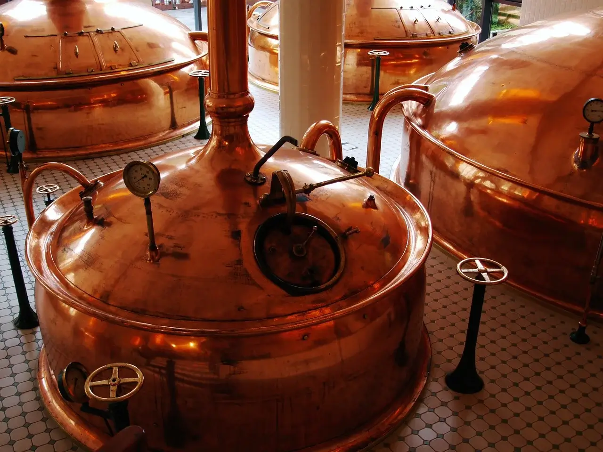
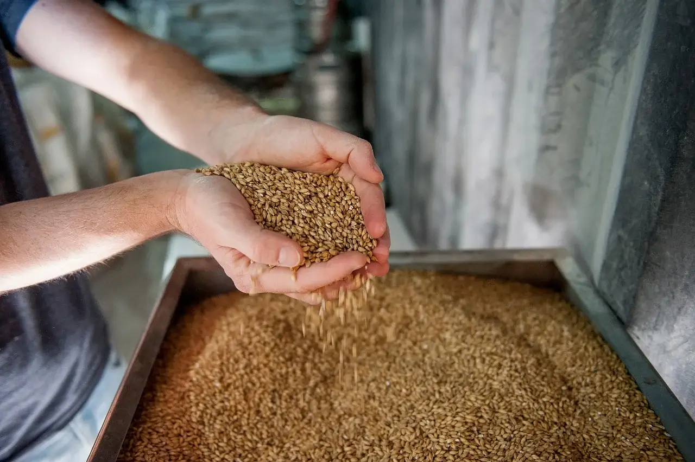
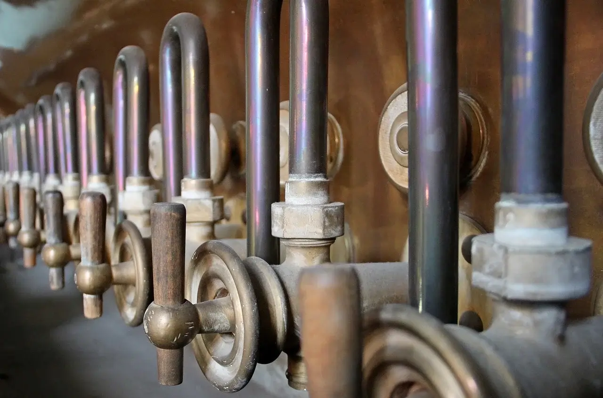

Cuervo Blanco: La Historia

<<
ALGUNOS DIRÁN QUE SOLO FUE UN SUEÑO… NOSOTROS PREFERIMOS DECIR QUE ES EL PROYECTO DE UNA
BANDA DE
ENTUSIASTAS.
>>
Desde 2016
EL PROYECTO CUERVO BLANCO
Una cosa lleva a la otra, de una receta a otra, se define el proyecto. Como apenas dábamos nuestros primeros pasos en el ambiente de las bebidas decidimos usar recetas de gran apoyo para así basar nuestro plan en lo económico, logrando así captar más personas y poder manejar un público más amplio a la hora de elegir las cervezas que serían las definitivas. Después de 1 año de trabajos de mejora en recetas e instalación, finalmente fue en junio de 2017 cuando nacieron las primeras cervezas.
 Unos años más tarde, Cuervo Blanco aumentó su equipo de trabajo, su cantidad de producción y el nivel de sus productos. Actualmente, tres cervezas regulares en el mercado, de gigantes ventas internacionales. Algunos dirán que solo fue un sueño… Nosotros preferimos decir que es el proyecto de una banda de entusiastas. ¡Amantes de la calidad! ¡Obsesionada con el equilibrio del sabor! ¡Dedicados a servir a nuestros clientes! Para finalizar, todo esto es posible gracias al invaluable apoyo de nuestras familias, nuestros amigos y nuestros clientes. Su amor, su energía y su comprensión apoyan todos nuestros esfuerzos. ¡Salud para todos!